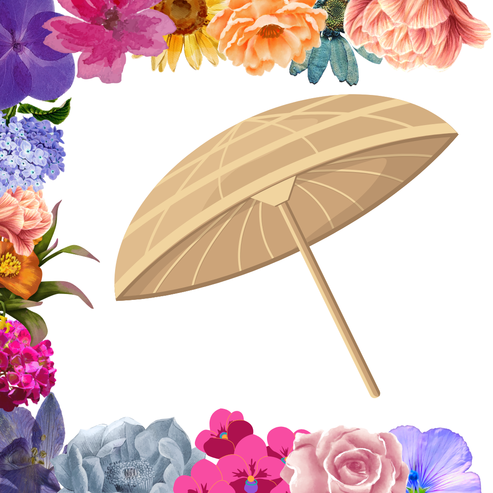

I am Mahabali, the adored ruler of Kerala from ages past. My reign was characterized by unwavering righteousness, boundless generosity, and an unyielding commitment to treating all subjects with equal care. Under my benevolent rule, Kerala thrived, and the specters of poverty, crime, and cruelty were but distant memories.
My prosperity and renown, however, ruffled the feathers of the devas, the celestial deities. Concerned about their dominion, they implored Lord Vishnu for assistance in curbing my influence.
In response, Lord Vishnu assumed the guise of Vamana, a diminutive Brahmin lad, and paid me a visit during one of my grand yagnas, dedicated to seeking his divine favor.
With humility, I inquired about his desires, and to my astonishment, the lad requested a mere three steps' worth of land. I consented, believing it to be a trivial matter.
Yet, as the lad embarked on his first two strides, I watched in amazement as he spanned the entire cosmos. It dawned upon me that this was no ordinary boy; it was the divine Lord Vishnu himself, playing a cosmic prank.
In reverence and humility, I proffered my head, offering it as the final step. Impressed by my unwavering devotion, Lord Vishnu graced me with his blessings and dispatched me to Pathala, the netherworld, with a yearly pass to visit my beloved subjects.
This pivotal event is said to have unfolded under the Thiruvonam star sign during the month of Chingam. Consequently, every year, during the joyous ten-day Onam festival, the people of Kerala joyfully await my annual visit. We celebrate our rich history and the enduring virtues of my reign with great fervor and enthusiasm.
Onathappan, also known as Thrikkakarappan, is a pyramid-like structure made from mud. For me, this pyramid-shaped representation primarily symbolizes the divine Lord Vishnu's avatar, Vamana. However, some individuals also associate this pyramid structure with my own presence as King Mahabali.
The Pookalam, a radiant floral carpet, is a symbol of the people's deep love and reverence for me, Maveli, their beloved king. Its intricate designs, created with devotion, mirror the unity and affection that define our kingdom's spirit during the festive season of Onam.
The Sadhya, with its rich and diverse flavors, is undeniably my favorite meal. It embodies the values of unity, compassion, and sharing that I hold dear as your king.It is a symbol of our cultural heritage and the spirit of togetherness.
Maveli's reign, a golden age of yore,
Justice and compassion, forever it bore.
Onam's grandeur, I bring to your door,
A feast of love, our spirits to restore.
In unity and joy, let us unite,
For in sharing and caring, we find our light.
In Kerala's embrace, I stand with pride,
Maveli, your king, by justice I abide.
Compassion flows in my heart's gentle stream,
For every soul, I cherish their dream.
Maveli Nadum, a song close to my heart, resonates with the rich cultural tapestry of Kerala. Its verses celebrate the values of justice, compassion, and unity that I hold dear as your king. With every note, it reminds us of our shared heritage and traditions, making it a cherished favorite of mine.